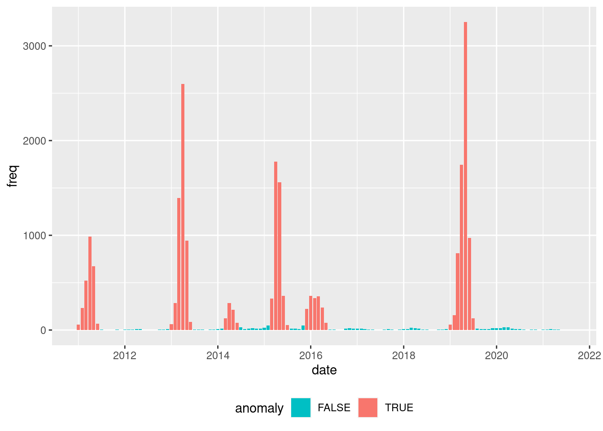

library(tidyverse)
library(tidymodels)
library(hotspots)
library(DT)
library(finetune)
library(themis)
library(arrow)
library(timetk)
library(rpart.plot)
library(vip)
library(doParallel)
doParallel::registerDoParallel()
source("../functions.R")Denque and weather lags
This notebook aims to study the relationship between Dengue cases incidence with lagged climate indicators, specially the co-occurrence of specific climate conditions that precedes an outbreak.
Packages
Dataset construction
Dengue
code_muni <- 3136702 # Juiz de Fora, MGThe original data on municipality dengue cases incidence present daily observations and is summarized by month.
dengue_df <- open_dataset(data_dir("dengue_data/parquet_aggregated/dengue_md.parquet")) %>%
filter(mun == !!substr(code_muni, 0, 6)) %>%
collect() %>%
summarise_by_time(.date_var = date, .by = "month", freq = sum(freq, na.rm = TRUE))Classify
Based on the observed frequency distribution of cases, we classify the months as anomalous or not.
hot_ref <- hotspots(
x = dengue_df$freq,
p = 0.99,
var.est = "mad",
)$positive.cut
dengue_df_anom <- dengue_df %>%
mutate(anomaly = if_else(freq >= hot_ref, TRUE, FALSE)) %>%
mutate(anomaly = as.factor(anomaly))dengue_df_anom %>%
ggplot(aes(x = date, y = freq, fill = anomaly)) +
geom_bar(stat = "identity") +
scale_fill_discrete(direction = -1) +
theme(
legend.position = "bottom",
legend.direction = "horizontal"
)
dengue_df <- inner_join(dengue_df, dengue_df_anom) Joining with `by = join_by(date, freq)`Proportion table of anomalous (yes) and not anomalous (not) months.
prop.table(table(dengue_df$anomaly))
FALSE TRUE
0.734375 0.265625 Weather data
The available weather data is also originally presented in daily observations and aggregate to months. For temperature indicators, the mean is used, for precipitation, the sum is used for aggregation.
tmax <- open_dataset(sources = data_dir("weather_data/parquet/brdwgd/tmax.parquet")) %>%
filter(code_muni == code_muni) %>%
filter(name == "Tmax_mean") %>%
select(date, value) %>%
collect() %>%
filter(date >= min(dengue_df$date) & date <= max(dengue_df$date)) %>%
summarise_by_time(.date_var = date, .by = "month", value = mean(value, na.rm = TRUE)) %>%
rename(tmax = value)
tmin <- open_dataset(sources = data_dir("weather_data/parquet/brdwgd/tmin.parquet")) %>%
filter(code_muni == code_muni) %>%
filter(name == "Tmin_mean") %>%
select(date, value) %>%
collect() %>%
filter(date >= min(dengue_df$date) & date <= max(dengue_df$date)) %>%
summarise_by_time(.date_var = date, .by = "month", value = mean(value, na.rm = TRUE)) %>%
rename(tmin = value)
prec <- open_dataset(sources = data_dir("weather_data/parquet/brdwgd/pr.parquet")) %>%
filter(code_muni == code_muni) %>%
filter(name == "pr_sum") %>%
select(date, value) %>%
collect() %>%
filter(date >= min(dengue_df$date) & date <= max(dengue_df$date)) %>%
summarise_by_time(.date_var = date, .by = "month", value = sum(value, na.rm = TRUE)) %>%
rename(prec = value)Join data
Join dengue and weather datasets.
res <- inner_join(x = dengue_df, y = tmax, by = "date") %>%
inner_join(tmin, by = "date") %>%
inner_join(prec, by = "date") %>%
select(date, anomaly, tmax, tmin, prec)Time lag
This step produces time lagged variables (from 1 to 6 months) from the weather indicators, remove the date variable, and omit records with missing data (only present after the time lag procedure).
res_prep <- res %>%
select(-date) %>%
tk_augment_lags(
.value = c(tmax, tmin, prec),
.lags = 1:6
) %>%
select(-tmax, -tmin, -prec) %>%
na.omit()head(res_prep) %>% datatable()Dataset split
Splits the dataset into training and testing.
res_split <- initial_time_split(
data = res_prep,
prop = .8,
lag = 6
)
train_data <- training(res_split)
test_data <- testing(res_split)Remove old objects and triggers a memory garbage collection.
rm(dengue_df, dengue_df_anom, res, res_prep)
gc() used (Mb) gc trigger (Mb) max used (Mb)
Ncells 3013526 161 4749918 253.7 4749918 253.7
Vcells 5234027 40 403999596 3082.3 679072422 5181.0Modeling
Recipes
Creates model recipes with the model specitication, data (train dataset). Several recipes are created with different methods to balance the training dataset.
rec_upsample <-
recipe(anomaly ~ ., train_data) %>%
step_upsample(
anomaly,
over_ratio = tune()
)rec_rose <-
recipe(anomaly ~ ., train_data) %>%
step_rose(
anomaly,
over_ratio = tune()
)rec_smote <-
recipe(anomaly ~ ., train_data) %>%
step_smote(
anomaly,
over_ratio = tune(),
neighbors = tune()
)rec_adasyn <-
recipe(anomaly ~ ., train_data) %>%
step_adasyn(
anomaly,
over_ratio = tune(),
neighbors = tune()
)rec_downsample <-
recipe(anomaly ~ ., train_data) %>%
step_downsample(
anomaly,
under_ratio = tune()
)Learners
Decision trees are choose due its directly interpretability and rules extraction. Two learners are created with different engines (rpart and partykit).
tree_rp_spec <- decision_tree(
cost_complexity = tune(),
tree_depth = tune(),
min_n = tune()
) %>%
set_engine("rpart") %>%
set_mode("classification")Folding
Creates a v-fold for cross-validation.
folds <- vfold_cv(
data = train_data,
v = 10,
strata = anomaly
)Workflow setting
This step creates an modeling workflow by combining the recipes and learners options.
wf_set <-
workflow_set(
preproc = list(
upsample = rec_upsample,
rose = rec_rose,
smote = rec_smote,
adasyn = rec_adasyn,
downsample = rec_downsample
),
models = list(
dt = tree_rp_spec
),
cross = TRUE
)Tuning
This step tune hyper-parameters from the models (learners and balancing steps) using an ANOVA race.
tune_results <- wf_set %>%
workflow_map(
"tune_race_anova",
seed = 345,
resamples = folds,
grid = 50,
metrics = metric_set(
accuracy,
bal_accuracy,
roc_auc,
ppv,
sens,
spec
),
control = control_race(parallel_over = "everything"),
verbose = TRUE
)i 1 of 5 tuning: upsample_dt 1 of 5 tuning: upsample_dt (9.4s)i 2 of 5 tuning: rose_dt 2 of 5 tuning: rose_dt (7.4s)i 3 of 5 tuning: smote_dt 3 of 5 tuning: smote_dt (9.7s)i 4 of 5 tuning: adasyn_dt 4 of 5 tuning: adasyn_dt (8s)i 5 of 5 tuning: downsample_dt 5 of 5 tuning: downsample_dt (10.4s)Best workflow and model selection
Based on the tuning results, this step identifies the best learner strategy and best model hyper-parameters based on the ROC-AUC metric.
target_metric <- "bal_accuracy"best_wf <- tune_results %>%
rank_results(rank_metric = target_metric) %>%
filter(.metric == target_metric) %>%
select(wflow_id, model, .config, accuracy = mean, rank) %>%
slice(1) %>%
pull(wflow_id)
print(best_wf)[1] "upsample_dt"best_tune <- tune_results %>%
extract_workflow_set_result(id = best_wf) %>%
select_best(metric = target_metric)
t(best_tune) [,1]
cost_complexity "0.02850468"
tree_depth "9"
min_n "8"
over_ratio "0.8693291"
.config "Preprocessor37_Model1"Finalize workflow
Finalizes the workflow with the choose learner and hyper-parameter combination, performing the last fit of the model with the entire dataset.
fitted_wf <- tune_results %>%
extract_workflow(id = best_wf) %>%
finalize_workflow(best_tune) %>%
last_fit(split = res_split)Results
Decision tree plot
extracted_engine <- fitted_wf %>% extract_fit_engine()
rpart.plot(extracted_engine, roundint = FALSE)Confusion matrix
augment(fitted_wf) %>%
conf_mat(truth = anomaly, estimate = .pred_class) Truth
Prediction FALSE TRUE
FALSE 16 1
TRUE 5 6Model performance metrics
multi_metric <- metric_set(
accuracy,
bal_accuracy,
roc_auc,
ppv,
sens,
spec
)
augment(fitted_wf) %>%
multi_metric(truth = anomaly, estimate = .pred_class, .pred_TRUE)# A tibble: 6 3
.metric .estimator .estimate
<chr> <chr> <dbl>
1 accuracy binary 0.786
2 bal_accuracy binary 0.810
3 ppv binary 0.941
4 sens binary 0.762
5 spec binary 0.857
6 roc_auc binary 0.238Variable importance plot
fitted_wf %>%
extract_fit_engine() %>%
vip()Session info
sessionInfo()R version 4.3.2 (2023-10-31)
Platform: x86_64-pc-linux-gnu (64-bit)
Running under: Ubuntu 22.04.3 LTS
Matrix products: default
BLAS: /usr/lib/x86_64-linux-gnu/blas/libblas.so.3.10.0
LAPACK: /usr/lib/x86_64-linux-gnu/lapack/liblapack.so.3.10.0
locale:
[1] LC_CTYPE=en_US.UTF-8 LC_NUMERIC=C
[3] LC_TIME=en_CA.UTF-8 LC_COLLATE=en_US.UTF-8
[5] LC_MONETARY=en_CA.UTF-8 LC_MESSAGES=en_US.UTF-8
[7] LC_PAPER=en_CA.UTF-8 LC_NAME=C
[9] LC_ADDRESS=C LC_TELEPHONE=C
[11] LC_MEASUREMENT=en_CA.UTF-8 LC_IDENTIFICATION=C
time zone: Europe/Paris
tzcode source: system (glibc)
attached base packages:
[1] parallel stats graphics grDevices utils datasets methods
[8] base
other attached packages:
[1] ROSE_0.0-4 rlang_1.1.3 doParallel_1.0.17 iterators_1.0.14
[5] foreach_1.5.2 vip_0.4.1 rpart.plot_3.1.1 rpart_4.1.23
[9] timetk_2.9.0 arrow_14.0.0.2 themis_1.0.2 finetune_1.1.0
[13] DT_0.31 hotspots_1.0.3 ineq_0.2-13 lattice_0.22-5
[17] yardstick_1.3.0 workflowsets_1.0.1 workflows_1.1.3 tune_1.1.2
[21] rsample_1.2.0 recipes_1.0.9 parsnip_1.1.1 modeldata_1.3.0
[25] infer_1.0.5 dials_1.2.0 scales_1.3.0 broom_1.0.5
[29] tidymodels_1.1.1 lubridate_1.9.3 forcats_1.0.0 stringr_1.5.1
[33] dplyr_1.1.4 purrr_1.0.2 readr_2.1.5 tidyr_1.3.1
[37] tibble_3.2.1 ggplot2_3.4.4 tidyverse_2.0.0
loaded via a namespace (and not attached):
[1] magrittr_2.0.3 furrr_0.3.1 compiler_4.3.2
[4] vctrs_0.6.5 lhs_1.1.6 pkgconfig_2.0.3
[7] fastmap_1.1.1 ellipsis_0.3.2 backports_1.4.1
[10] labeling_0.4.3 utf8_1.2.4 rmarkdown_2.25
[13] prodlim_2023.08.28 tzdb_0.4.0 nloptr_2.0.3
[16] bit_4.0.5 xfun_0.41 cachem_1.0.8
[19] jsonlite_1.8.8 prettyunits_1.2.0 R6_2.5.1
[22] bslib_0.6.1 stringi_1.8.3 boot_1.3-28
[25] parallelly_1.36.0 jquerylib_0.1.4 Rcpp_1.0.12
[28] assertthat_0.2.1 knitr_1.45 future.apply_1.11.1
[31] zoo_1.8-12 Matrix_1.6-3 splines_4.3.2
[34] nnet_7.3-19 timechange_0.3.0 tidyselect_1.2.0
[37] rstudioapi_0.15.0 yaml_2.3.8 timeDate_4032.109
[40] codetools_0.2-19 listenv_0.9.0 withr_3.0.0
[43] evaluate_0.23 future_1.33.1 survival_3.5-7
[46] xts_0.13.2 pillar_1.9.0 generics_0.1.3
[49] hms_1.1.3 munsell_0.5.0 minqa_1.2.6
[52] globals_0.16.2 class_7.3-22 glue_1.7.0
[55] tools_4.3.2 data.table_1.14.10 lme4_1.1-35.1
[58] gower_1.0.1 grid_4.3.2 crosstalk_1.2.1
[61] ipred_0.9-14 colorspace_2.1-0 nlme_3.1-163
[64] cli_3.6.2 DiceDesign_1.10 fansi_1.0.6
[67] lava_1.7.3 gtable_0.3.4 GPfit_1.0-8
[70] sass_0.4.8 digest_0.6.34 farver_2.1.1
[73] htmlwidgets_1.6.4 htmltools_0.5.7 lifecycle_1.0.4
[76] hardhat_1.3.0 bit64_4.0.5 MASS_7.3-60